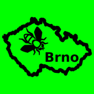

Účinnost od 10. září 2026
Tref Brno je sbírka dvou offline her (skládačka rotujících dílků a hádání směru mezi českými městy). Nemá účet, nemá internet, nemá reklamy. Tady je přesně, co to v praxi znamená.
Žádná. Tref Brno neshromažďuje, neukládá na server ani nesdílí žádné osobní údaje, identifikátory zařízení, polohu ani chování v aplikaci. V aplikaci nejsou žádné reklamy, analytické nástroje ani sady SDK třetích stran, takže se z ní ven žádná data neposílají — nemá k tomu ostatně ani technickou možnost (viz oprávnění níže).
Aplikace při instalaci nežádá o žádné oprávnění systému Android — ani o přístup k internetu, poloze, fotoaparátu, kontaktům, úložišti ani čemukoliv jinému.
Aplikace si lokálně pamatuje jen váš herní postup a dosažené skóre.
Vše se ukládá výhradně do soukromého úložiště aplikace na vašem zařízení, aplikace to sama nikam neodesílá a při odinstalování se to spolu s ní smaže. Žádný z těchto údajů vás neidentifikuje.
Máte-li v systému Android zapnuté zálohování aplikací, může tento herní postup zkopírovat do vašeho vlastního účtu Google systémová funkce Androidu (Auto Backup). Děje se tak mimo aplikaci a spravujete to v nastavení telefonu.
Mapy použité ve hře jsou předem vykreslené z otevřených dat OpenStreetMap (© přispěvatelé OpenStreetMap) a z veřejných výškových dat NASA/USGS SRTM. Vykreslení proběhlo při tvorbě aplikace, ne za běhu na vašem zařízení — aplikace tedy při hraní žádnou mapovou službu nekontaktuje a vaši polohu nezjišťuje ani nepoužívá.
Aplikace neshromažďuje údaje od nikoho, tedy ani od dětí, a neobsahuje žádný mechanismus sběru dat, který by bylo potřeba věkově omezovat. Nejsou v ní reklamy.
Hry neobsahují vulgární výrazy, násilí ani jiný obsah nevhodný pro děti — jde o nenásilné zeměpisné hlavolamy vhodné pro všechny věkové kategorie.
Pokud se v budoucnu způsob nakládání s daty změní (např. přidáním nové funkce), aktualizujeme tuto stránku a upravíme datum účinnosti nahoře. Žádné tiché změny se zpětnou platností.
Dotazy k těmto zásadám nebo k aplikaci směřujte na otocsvojek@gmail.com.